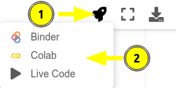

La Química Cuántica a tu alcance¶
El presente libro digital tiene como objetivo ser un manual de prácticas para la asignatura de Química Cuántica I (clave 1404) de la Facultad de Química (UNAM). La última sección puede considerarse una parte avanzada disponible de manera opcional para quien desee aprender más, y puede ser de utilidad para la asignatura de Química Cuántica II (clave 0038). El libro digital es un esfuerzo compartido de Juan Felipe Huan Lew Yee, Eduardo Barrios Vargas y Jorge Martín del Campo Ramírez, en conjunto con los profesores del Departamento de Física y Química Teórica. Toda retroalimentación es bienvenida, y se le invita a compartirla a los correos:
M. en C. Juan Felipe Huan Lew Yee: felipe.lew.yee@gmail.com
Dr. Jorge Martín del Campo Ramirez: jormacara@gmail.com
Dr. José Eduardo Barrios Vargas: j.e.barrios@gmail.com
Se ha buscado reducir lo más posible los antecedentes matemáticos requeridos, por lo que en la mayoría de los ejercicios se plantea el problema y se pasa directamente a la solución sin realizar el desarrollo. Se asume que las ecuaciones han sido previamente revisadas en clase, sin embargo, en muchos notebooks pueden encontrarse partes clave del desarrollo matemático ocultas en una celda como la siguiente
Inserto matemático: Celda con contenido matemático oculto
La lectura de este apartado matemático oculto es opcional si ya se conoce la deducción previa de las ecuaciones, pero aquí está por si alguien lo necesita. Aquí van algunas funciones trigonométricas
Para los alumnos del curso de Química Cuántca I se recomienda la lectura en el orden de los capítulos, el cual puede seguirse utilizando la barra de navegación que aparece del lado izquierdo en computadoras, o con el menú emergente en dispositivos móviles. Este libro permite interactuar con el contenido, para lo cual se recomienda alguna de las opciones siguientes:
Ejecución de los notebooks (en línea)
Los notebooks pueden ejecutarse en línea desde Google Colab al presionar el ícono de la nave y dar clic sobre Colab, este ícono aparece en la parte superior de cada notebook. Los archivos generados en Google Colab se guardan automáticamente en su Google Drive. El único requisito este tener una cuenta asociada a Google.

Ejecución de los notebooks (live code)
Puede ejecutar los notebooks directamente en el libro haciendo clic sobre el botón.
Ejecución de los notebooks (en computadora)
Puede descargar los *.ipynb y ejecutarlos directamente en su computadora dando click sobre el botón con la flecha apuntando hacia abajo. Para ejecutarlos localmente es su computadora se requiere una instalación previa de Python. En caso de no tenerla puede instalar Anaconda. Una vez descargado puede interactuar con el notebook utilizando Jupyter Notebook.
En caso de tener una instalación local de Anaconda en Linux verifique que tenga instaladas las librerías utilizadas en los notebooks. Dichas librerías las puede instalar desde la terminal utilizando las siguientes líneas:
conda create -n QCI
conda activate QCI
conda install psi4 psi4-rt python=3.7 -c psi4
conda install jupyter notebook matplotlib numpy scipy sympy
Después, puede ejecutar un notebook con Jupyter
conda activate QCI
jupyter notebook NOMBRE.ipynb
Warning
Los códigos que usen psi4 solo funcionan en ejecución directa desde computadora y no en Google Colab ni en live code.
Los ejercicios de este libro requieren un conocimiento básico de Python, mismo que puede adquirirse en el primer capítulo del libro.
Uso del manual¶
A lo largo de los ejercicios encontrará celdas con el código correspondiente, y celdas vacías con una nota para indicar que debe ser llenada siguiendo alguna instrucción, como la siguiente
# Llene la siguiente celda con su código
La primera vez que se presente una instrucción se mostrará directamente para copiar y pegar en la celda, por ejemplo, el siguiente código muestra como realizar una impresión
print("Bienvenidos al manual de Química Cuántica I")
Posteriormente, cuando se solicite realizar algo usando código ya presentado, se mostrará la respuesta oculta para permitir que se intente resolver el ejercicio en la celda vacía por cuenta propia. Para revelar la respuesta hay que presionar en el botón con el símbolo + como en la siguiente celda
print("Bienvenidos al manual de Química Cuántica I")
Bienvenidos al manual de Química Cuántica I